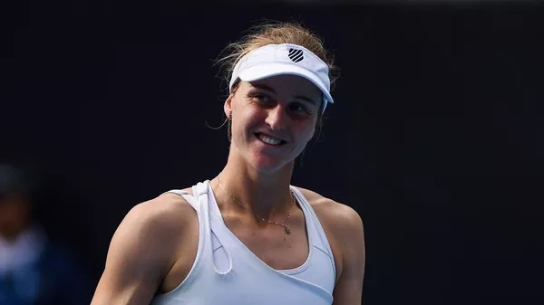

14:02 09.02.2024 (обновлено: 14:13 09.02.2024)
Самсонова вышла в полуфинал турнира в Абу-Даби
Российская теннисистка Самсонова вышла в полуфинал турнира в Абу-Даби
МОСКВА, 9 фев - РИА Новости. Российская теннисистка Людмила Самсонова вышла в полуфинал турнира WTA 500 в Абу-Даби (ОАЭ), призовой фонд которого составляет более 900 тысяч долларов.
В матче 1/4 финала Самсонова, получившая восьмой номер посева, обыграла четвертую ракетку турнира чешку Барбору Крейчикову со счетом 7:5, 6:4. Продолжительность матча составила 1 час 45 минут.
Гораздо активнее были помощники Слуцкого - Березуцкий и Яровинский. Они пытались докричаться до игроков с трибун не очень масштабного по последним катарским меркам стадиона и обменивались мнениями с главным. В январе Леонид Викторович заявлял, что проведение товарищеских матчей против сильных соперников вне зависимости от результата будет полезным для его команды. В матче с "Зенитом" все сложилось именно так — удручающие 0:6 и внушительная чаша пищи для размышлений.
В полуфинале 25-летняя россиянка, занимающая 15-е место в рейтинге Женской теннисной ассоциации (WTA), встретится с победительницей матча между первой ракеткой турнира Еленой Рыбакиной из Казахстана и испанкой Кристиной Бучей.
Главные новости
-
Друг Овечкина временно покинул "Вашингтон". Новая эпидемия в НХЛ?
11.38
-
Бетербиев и Бивол подерутся летом! Отвечаем на пять главных вопросов по бою
12.53
-
Последний шанс. Хэмилтон идет в "Феррари" за рекордным титулом
12.53
-
В "Шанхае" - без раскачки: клуб Слуцкого разгромно проиграл "Зениту"
12.53
-
Самсонова вышла в полуфинал турнира в Абу-Даби
14.13
-
Лебедев назвал формальностью нейтральный статус россиян на Олимпиаде
10.05